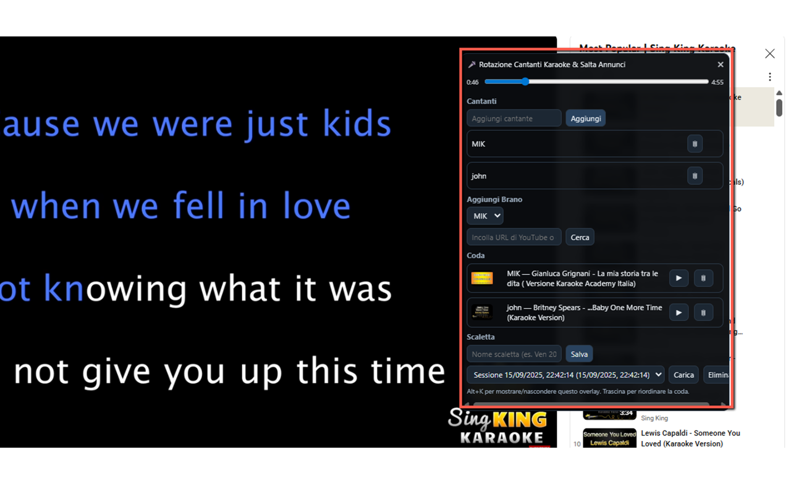
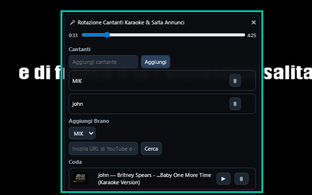

YouTube Karaoke Extension
Imagine turning YouTube into your personal karaoke stage 🎤. With YouTube Karaoke Extension, that dream becomes reality. This powerful yet simple Chrome extension brings together everything you need to run a karaoke night at home, in a bar, or even during online parties. It combines playlist management, singer rotation, pitch shifting, and direct video integration—all within YouTube itself. Thanks to the DUAL SCREEN function you will be able to project karaoke video onto an external screen for the best result!
No more juggling between apps or struggling to keep track of whose turn it is. The extension allows you to build a queue of karaoke videos, assign them to specific singers, and automatically manage the order of performances. With just a few clicks, you can search YouTube for karaoke tracks (no API key required), add them to the playlist, and keep the music flowing smoothly. Everything happens in an overlay interface that sits on top of YouTube, so you never lose your place or miss a beat.
One of the standout features is the pitch control 🎶. Not everyone has the same vocal range, and singing along becomes much more fun when the key fits your voice. With the built-in pitch shifter, you can adjust the song up or down by semitones without changing the speed, making every performance sound natural and comfortable. Whether you need to drop it down for a deeper voice or raise it for higher notes, the extension adapts instantly.
Managing multiple singers is effortless. Each participant can add their name and pick songs, and the extension will handle the rotation automatically. No more confusion about who sings next—the system ensures fairness and keeps the fun going. Plus, the overlay can be shown, hidden, or even dragged around the screen for maximum convenience.
📄 How to Use
- Install the extension from the Chrome Web Store
- Open any karaoke video on YouTube.
- Click the extension icon to toggle the overlay.
- Add singers and search for karaoke tracks directly inside the panel.
- Build your queue, adjust pitch, and start the show.
- Use play/pause and next/previous controls to keep the party moving.
📷 Screenshots


✅ Features
- DUAL SCREEN to project karaoke video onto an external screen
- Search and add YouTube karaoke videos without API keys
- Create and manage a singer list with automatic rotation
- Queue songs and control playback directly from the overlay
- Adjust pitch (+/- 2 semitones) without changing speed
- Overlay interface: draggable, show/hide anytime
- Automatic ad muting for smoother playback
With YouTube Karaoke Extension, every night can become karaoke night. Whether you’re practicing alone, entertaining friends, or running a professional karaoke session, this extension gives you the tools you need—all within the world’s biggest video platform. No extra downloads, no complicated setup—just open YouTube, start the extension, and sing your heart out. 🎶
View on Chrome Web Store